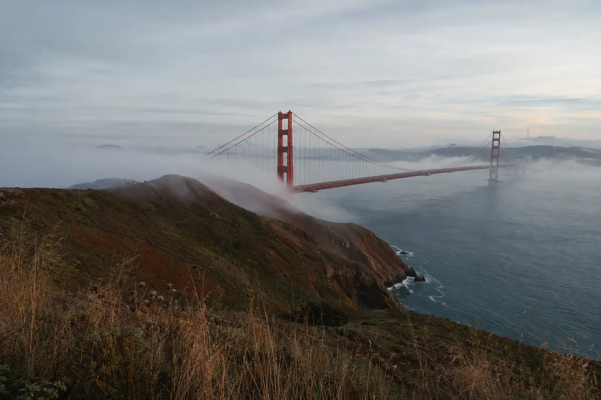
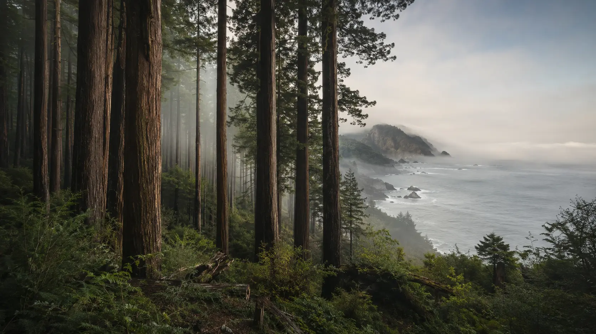

About NorCal SBDC
We’re here to help.
NorCal SBDC empowers entrepreneurs on their journey — advising, training and capital that lead to prosperous local communities.


We’re your business people.
Meet your advisorExperience you can lean on.
Advisors who have run restaurants, raised rounds, won contracts and managed payroll through hard seasons.
A specialist for every turn.
Finance, marketing, food and hospitality, tech commercialization, government contracting and veteran programs.
In your language.
Business support in multiple languages, with local advisors who understand your community.
Confidential, always.
Private conversations, no fee, and nothing to sell you.
Local expertise. Regional reach.
Local expertise. A wider circle of support. Capital that helps businesses move forward.
Capital unlocked
Loans and equity for SBDC clients across Northern California.
Local jobs supported
Businesses creating opportunity in their communities.
Client satisfaction
We measure our success by yours.
No fee to you, thanks to our partners — SBA, CalOSBA and a dedicated network of hosts.
Meet our partnersDraft figures supplied for design review. Reporting periods and sources to be confirmed before launch.
Local to a place like no other.
From the Shasta Cascades to the Pacific, the High Sierra to the Golden Gate — this is where we live, work and help businesses grow.
Find your local SBDCCounties we serve
Local knowledge, connected across Northern California.
People who live here
Small businesses are part of everyday life in this extraordinary region.
Languages we advise in
English, Spanish, Vietnamese, Korean, Cantonese, Mandarin, Farsi, Tagalog and more.



A business. A person. A possibility.
“The SBDC helped me early on to get into the dream fund and receive a grant!”
Laila O’BoyleFounder, The Early Rise · San Francisco
Read Laila’s story